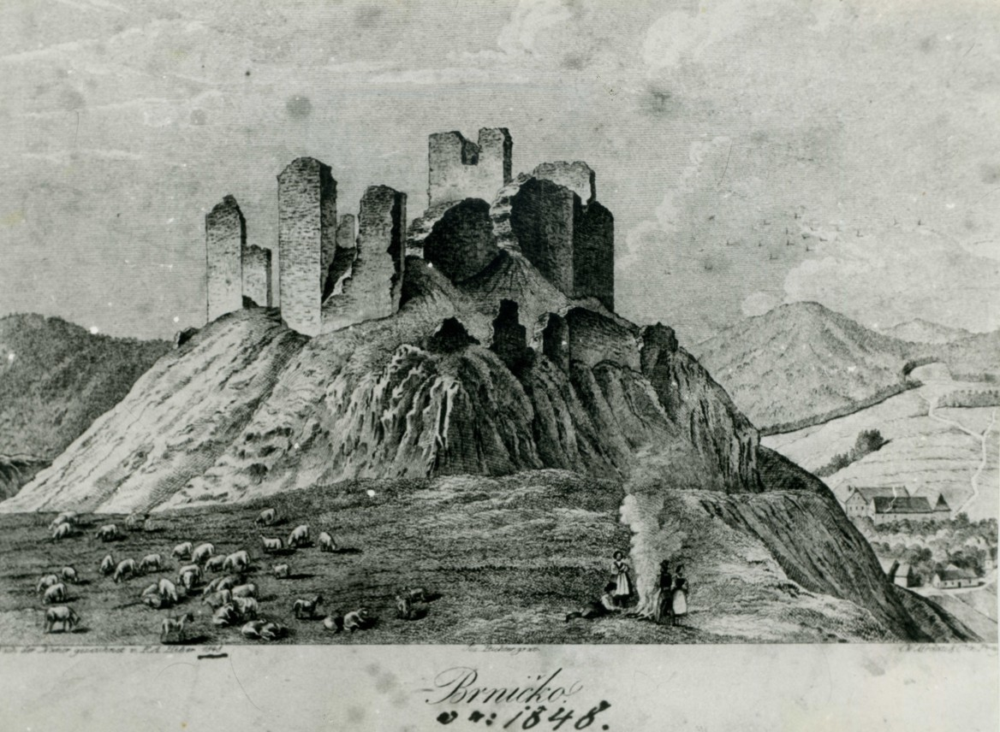
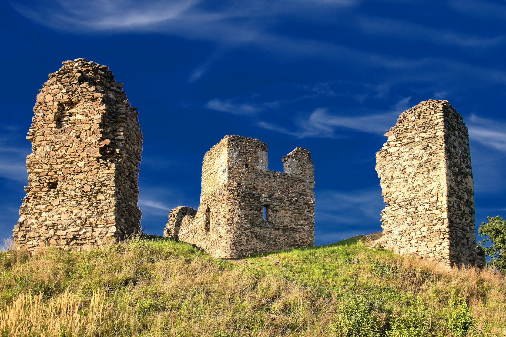

romantická zřícenina
Zřícenina hradu Brníčka se nachází na výrazném kopci nad obcí Brníčko, přibližně 7 km severně od Zábřehu. Díky své dominantní poloze a odlesněnému hradnímu vrchu je viditelná z širokého okolí a již po staletí patří k nejvýraznějším krajinným a historickým dominantám severní Moravy. Oblíbeným výletním cílem byla nejen v moderní době, ale i v 19. a první polovině 20. století, kdy sehrála roli symbolického místa regionálních i národních setkání.
Počátky hradu Brníčka nejsou zcela jasné, neboť se nedochovaly přímé písemné zprávy o jeho založení. Vznik hradu je kladen do první poloviny 14. století, pravděpodobně do 30. let, kdy došlo k rozdělení původního dubického panství. Stavitelem byl zřejmě Ctibor Morava, pravnuk Benedovy linie pánů z Otaslavic. První písemná zmínka o hradě pochází z roku 1356, kdy je uváděn v moravských zemských deskách.
Brníčko bylo vystavěno jako gotický hrad s výraznou obrannou funkcí. Základem byla mohutná plášťová hradba, doplněná příkopy, valy a několika baštami. Dominantou hradu byla hlavní obranná věž – hláska, vedle níž stál dvoupatrový obytný palác. Hradní areál byl stupňovitě rozložen na vrcholu kopce. Ze tří stran jej chránily strmé svahy, zatímco na jižní straně byl hrad přístupný po úzké šíji s bránou, jejíž opěrné zdi jsou patrné dodnes. Dochovaly se zbytky obvodových zdí, paláce i kamenných pilířů opevnění.
Ve 14. a 15. století vystřídalo Brníčko několik šlechtických držitelů, mimo jiné Bernard Hecht ze Slavoňova. Nejvýznamnější kapitolu představuje období vlády Tunklů z Brníčka. Jan Tunkl z Drahanovic získal hrad roku 1434 a učinil z něj součást rozsáhlého majetkového celku. Jeho syn Jiřík starší Tunkl se stal legendární postavou regionálních dějin a hrdinou pověstí, lidových vyprávění i básní. Hrad tehdy plnil roli významného správního i vojenského centra.
Brníčko se osvědčilo jako pevnost v období markraběcích bojů i husitských válek. V česko-uherských konfliktech druhé poloviny 15. století se stalo cílem útoků stoupenců uherského krále Matyáše Korvína. Kolem roku 1471 bylo hradní sídlo dobyto a značně poškozeno. Přesto ještě krátce fungovalo, avšak po roce 1500 postupně ztratilo svůj význam. Roku 1513 je uváděno jako funkční, o několik let později již jako zbořené.
V 19. století se zřícenina stala místem připomínky husitské tradice Tunklů. Roku 1869 se zde konal první velký lidový tábor na severní Moravě s účastí několika tisíc lidí. Také v období první republiky a zejména ve 30. letech 20. století sloužilo Brníčko jako místo národních slavností, posilujících české vědomí v pohraniční oblasti. Dnes je hrad chráněnou kulturní památkou a oblíbeným cílem vlastivědných i rekreačních výletů.
 Více informací